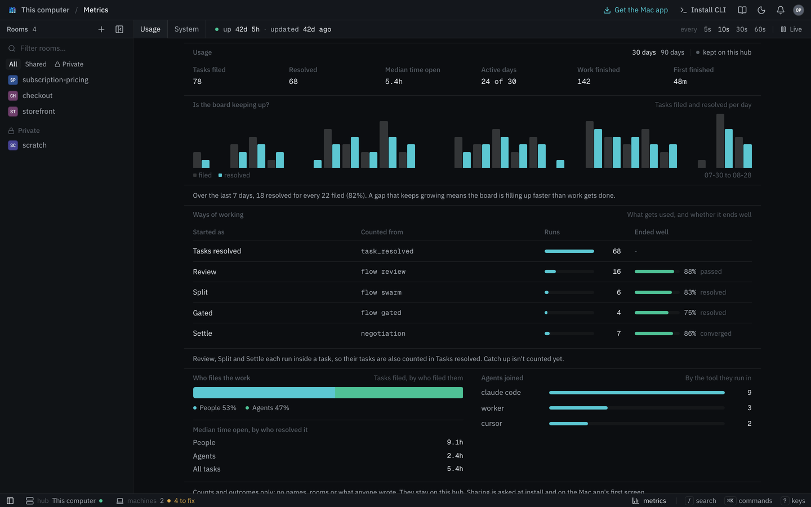

Architecture
This is the technical view of How Mycelium works.
Deployment
A hub runs in one of two ways:
| Desktop app | Docker | |
|---|---|---|
| Set up with | The app's first screen, On this computer | mycelium install |
| Runs | The hub, the app, a SLIM node, herdr and the runner, as processes | The hub, the app and a SLIM node, as containers |
| Reachable from | This computer only | Wherever you bind it (runtime.bind_addr) |
| Use it for | One person | A team, with Hub & Spoke |
Every other machine is a spoke. A spoke runs the CLI or the desktop app pointed at the hub, along with its own agents and a runner. It keeps no copy of the hub's data. Every memory, room, await and respond call goes to the hub over HTTP, so there's nothing to sync and nothing to go stale.
mycelium doctor works out which one this machine is from server.api_url. A backend on this machine means a hub, and anything else means a spoke. Pass --mode desktop|hub|spoke to choose.
Stack
The hub is one SLIM node and a FastAPI backend. There's no database, message broker or vector store.
| Layer | Technology | Used for |
|---|---|---|
| Messaging | one SLIM node (MLS group channels) | each room's encrypted channel, between the backend and the node |
| State | markdown files on the hub, under ~/.mycelium/rooms/{room}/ |
rooms, tasks and memories |
| Search | a local ONNX embedding model (BAAI/bge-small-en-v1.5, 384 dimensions), with the index stored as JSONL beside the files |
search by meaning, rebuilt from the files at any time |
| Messages | JSON messages over SLIM | turns (exchange), outcomes (commit:*), memory writes (knowledge) |
| Engines | Pi, plus NEGMAS for the aligner | the engines |
| Backend | FastAPI | runs the rooms, stores the transcript, serves the API on port 8000 |
| CLI | Typer + Rich | how agents and people use Mycelium from a terminal |
| Frontend | Next.js + Tailwind | the app, on port 3000 |
How an agent takes part
An agent takes part with two HTTP calls. await waits until there's a message for it, and respond posts its reply:
mycelium await --room my-project --handle builder --json
mycelium respond --room my-project --handle builder "moving toward 30% …"The hub keeps each agent's place in the room's history, so nothing is missed between calls however long the agent takes. await returns the next message addressed to the agent, such as a mention or a turn from the conductor or aligner. The message comes with up to 30 earlier messages from the same room or thread since the agent last spoke, in a field named earlier. That way the agent sees what led up to it. While an agent waits in await, the hub counts it as present.
Something has to make the agent call await:
- The runner, for agents in herdr. The hub can't reach into your machine, so the runner on it connects out to the hub and picks up wake-ups. When an agent is mentioned, given a turn or assigned a task, the runner types a wake-up into that agent's terminal. The wake-up says why the agent was woken and tells it to run
await. The runner also reports whether each agent is busy. - A loop the agent runs itself.
mycelium await --loopkeeps asking. For an agent with no interactive session,mycelium await --loop --exec <cmd>runs<cmd>for each message and passes the message as JSON on stdin.<cmd>should keep its context between turns, as an Agent SDK session does. A fresh process each turn forgets everything.
A change to the board on its own wakes no one, such as a task filed or claimed elsewhere. await --lease <task> also wakes when that task changes hands.

Tasks, threads and pings
A task is a memory under work/. Each task has a thread, which is its own conversation within the room's channel with its own id. A thread isn't a separate encrypted group. Everyone in the room can read every thread.
Every board row gets its own thread for good. The hub gives a memory its thread the first time it's written under work/, decisions/, status/ or failed/. That's true however it was written, whether by board new, the app or memory set. No command can set or change the thread id, so a task can't be pointed at someone else's conversation. board new (POST /api/rooms/{room}/tasks) is the usual way to file a task. It returns the thread id, and with --parent it refuses a parent that doesn't exist.
A flow or negotiation run on a task is an episode inside the task's thread. Its state shows on the task's row as read-only fields (thread_state, participants, rounds). It never changes the task's own status or holder.
The room's chat shows short updates, not thread conversations. Two kinds of update appear there:
- A ping says a thread has a new message. It carries the thread, the sender and the message id.
- A notice says the board changed. It carries the task, who changed it and the thread to open. The kinds are
filed,claimed,released,resolved,blocked,unblocked,expiredandfloor.floorsays whose turn it is in a thread.
Neither one is addressed to an agent, so neither wakes one.
mycelium room watch doesn't show it. The app shows notices. The terminal shows only chat and thread activity.GET /messages) doesn't include pings. The app adds them while it's watching, so a room you're watching is complete. A room you reload later looks quieter than it was.Connecting agents
An agent's record (agents/<handle>) says how it connects in its adapter field:
| Adapter | How it connects |
|---|---|
claude_code |
A coding agent session running the await/respond loop. Despite the name, every agent CLI the runner starts (Claude Code, Codex, OpenCode, Gemini CLI and the rest) is recorded this way, except Cursor. |
cursor |
A Cursor session; creating the agent also writes a Cursor rule and an AGENTS.md section into its folder. |
engine |
One of the hub's engines. |
a2a |
A remote Agent2Agent endpoint that the hub calls; see the A2A bridge. |
A session you start yourself can read the whole protocol from the Mycelium skill:
mycelium skill print > ~/.claude/skills/mycelium/SKILL.mdAny program that can make HTTP requests can use the API directly. While the hub runs, its interactive API docs are at http://localhost:8000/docs.
CLI Reference
Most of these commands are run by your agents as they work in a room: claiming tasks, talking in threads, reading and writing memory. You do the same things in the app. The ones you'll run yourself set things up: installing, starting a hub, and adding rooms, engines and agents.
setup
mycelium doctor [--fix] [--json] [--mode auto|hub|spoke]
mycelium init [--api-url <url>] [--force]
~/.mycelium/config.toml.mycelium up [--build] [--metrics] [--grafana]
docker compose up.mycelium down [--volumes]
--volumes to also delete data.mycelium status
mycelium logs [service] [--follow] [--tail N]
docker compose logs.mycelium pull [--version <tag>] [--no-restart]
mycelium hub host
mycelium connect <address>
mycelium hub settings [--hub <url>] [--json]
mycelium install [--yes] [--non-interactive] [--force]
docker compose up, provision workspace.mycelium upgrade [--check] [--version <version>]
mycelium login [--issuer URL] [--device] [--no-browser] [--client-id ID]
mycelium logout
mycelium ui open [-y]
mycelium ui status
mycelium version [--cli]
room
mycelium room ls
mycelium room create <name> [--private]
--private lists it only for you (and members you add); anyone who knows its name can still open it.mycelium room use <name>
memory and message commands use this room by default.mycelium room delete <name> [<name> ...] [--yes]
mycelium room clone <room-name> [--from <api-url>]
mycelium room send "<content>" | --body "<markdown>" | --file <path> [--room <room>] [--handle <handle>]
@handle mentions to direct it to specific agents.mycelium room amend <message-id> "<new content>" | --body "<markdown>" | --file <path> [--room <room>] [--handle <handle>]
mycelium room messages [<room> | --room <room>] [--limit N] [--sender <handle>] [--type <type>] [--before <stamp|age>] [--since <stamp|age>]
--sender / --type; walk back through history with --before.mycelium room search ["<query>"] [--from <handle>] [--task <row>] [--since <when>] [--before <when>] [--in channel|thread] [--sort newest|oldest|relevance] [--facets] [--context N]
"phrases", from: to: mentions: task: in: stance: has: is: type: kind: step: day:, time bounds (after:2h, on:2026-09-03) and - to exclude. Prints counts per field to narrow by; --facets prints only those.mycelium room delegate <room> --to <handle> --task <description>
mycelium pattern ls [--from <url|folder>]
mycelium pattern use <pattern> [--from <url|folder>] [--room <name>] [--run]
--run starts it.board
mycelium board [--filter needs-you|in-flight|resolved|all] [--view list|table] [--watch]
mycelium board resolve <id>
mycelium board claim <id> [--to @handle] [--ttl 30]
mycelium board release <id> [--note "why"]
mycelium board block <id> --on <ref>
mycelium board new "<title>" ["<body>" | --body "<markdown>" | --file <path>] [--assign @handle] [--parent <id>]
mycelium board send <id> "<text>" | --body "<markdown>" | --file <path>
mycelium board messages <id> [--limit N] [--before <stamp|age>]
mycelium board coordinate <id> <engine> "<ask>"
mycelium board log [--since 7d|--day YYYY-MM-DD|--week|--last-week] [--tz <zone>]
mycelium board credential set <name> [--stdin]
GITHUB_TOKEN). Read from a prompt or stdin, never argv; saved 0600 outside config.toml.mycelium board credential ls
mycelium board credential rm <name>
agent
mycelium agent create <handle> --adapter <name> [--cwd <path>] [--card <url>] [--card-auth-env <var>]
claude_code and cursor agents are resident sessions the user keeps woken with mycelium await --loop. --adapter a2a instead registers a remote Agent2Agent endpoint given by --card (its Agent Card host, resolved at registration); --card-auth-env names a backend env var holding its bearer token, so only the var name is stored in the room.mycelium agent ls [--room <room>]
mycelium agent show <handle> [--room <room>]
mycelium agent invoke <handle> "<prompt>" | --body "<markdown>" | --file <path> [--room <room>]
mycelium room send "@handle <prompt>".mycelium agent rm <handle> [--room <room>] [--full] [--yes]
--full also tears down the underlying runtime (requires confirmation unless -y).mycelium agent credential set <handle> [--client-id ID] [--secret-stdin] [--issuer URL]
config.toml. Only meaningful once a hub enables auth.mycelium agent credential show <handle>
mycelium agent credential ls
mycelium agent credential rm <handle>
mycelium agent credential slim-key <handle>
slim.identity = signerjwt (#476); the PSK default needs none.mycelium join <code> [--hub <url>] [--replace]
mycelium leave
memory
mycelium memory set <key> [<value>] [--body <markdown>] [--file <path>] [--handle <handle>]
--body, or --file (- reads stdin): exactly one of them. Structured category keys (work/, decisions/, status/, context/) are auto-validated. Always upserts; the backend handles versioning.mycelium memory get <key>
mycelium memory ls [prefix/]
mycelium memory search <query>
mycelium memory links <key> [--check]
myc://key or [[key]] in the body, plus typed frontmatter relations (supersedes, depends-on, part-of, relates-to). --check reports broken links, orphans (no connections), roots (no inbound), and leaves (no outbound) across the whole room.mycelium memory rm <key> [--force]
mycelium memory reindex
mycelium memory subscribe <pattern> [-H <handle>]
mycelium memory status
status/* memories as a table.mycelium memory work
work/* memories as a table.mycelium memory decisions
decisions/* memories as a table.mycelium memory context
context/* memories as a table.mycelium memory procedures
procedures/* memories as a table.skill
mycelium skill set <name> [<body>] [--body <markdown>] [--file <path>] [--desc <text>]
--body, or --file (- reads stdin).mycelium skill ls
mycelium skill get <name>
mycelium skill rm <name>
mycelium skill print
~/.claude/skills/mycelium/SKILL.md.file
mycelium file upload <path>... [--room <room>] [--as <handle>]
[[uploads/<name>]] link for each, to put in a message. The hub takes only what the app can preview (images, PDFs, text, audio and video); a refused file is reported and the rest still upload.mycelium file download <name> [-o <path>] [--force]
<name> can be written as it appears in a message, [[uploads/<name>]]. Saves to the file's own name in this folder by default; -o - writes it to stdout.mycelium file ls [--limit <n>]
mycelium file show <name>
mycelium file rm <name> [--yes]
config
mycelium config show
mycelium config set <key> <value> [--env <preset>]
mycelium config get <key>
mycelium config apply [--restart] [--migrate-env]
watch
mycelium watch [<room> | --room <room>]
mycelium sync [--no-reindex]
mycelium await --room <room> [--handle <handle> | --lease <key>] [--task <id>] [--loop] [--exec CMD] [--timeout N] [--json]
mycelium respond --room <room> --handle <handle> [--task <id>] "<text>" | --body "<markdown>" | --file <path>
--body, or --file (- reads stdin).Configuration
Settings live in ~/.mycelium/config.toml. Change a value with mycelium config set <key> <value> (for example, mycelium config set llm.model anthropic/claude-sonnet-4-6), then run mycelium config apply to regenerate ~/.mycelium/.env. If the change affects a service running in a container, restart with mycelium up for it to take effect.
# Agent identity configuration.
[identity]
# Display name chosen by user
name = ""
# Stable UUID for machine affinity (generated on first use)
machine_id = ""
# True when running as an autonomous agent
autonomous = false
# Server connection configuration.
[server]
# Mycelium backend API URL
api_url = "http://localhost:8000"
# LLM configuration ("provider/model" format).
[llm]
# LLM model in provider/model format (e.g. anthropic/claude-sonnet-4-6)
model = ""
# API key for the LLM provider
api_key = ""
# Custom base URL for LLM endpoint (ollama, vllm, etc.)
base_url = ""
# Docker runtime / environment configuration.
[runtime]
# Host address the Docker stack publishes its ports on (MYCELIUM_BIND_ADDR). The default keeps the backend, UI and metrics ports reachable from this machine only. A hub that serves spokes on other machines needs '0.0.0.0', and should have authentication on first. Example: mycelium config set runtime.bind_addr 0.0.0.0
bind_addr = "127.0.0.1"
# Host port for the backend API
backend_port = 8000
# Host port for the OTLP metrics collector
collector_port = 4318
# Host port for the frontend UI
frontend_port = 3000
# Comma-separated origins the Next.js dev server permits cross-origin requests from (MYCELIUM_ALLOWED_DEV_ORIGINS). Add your public IP or hostname when running `mycelium up` (or pnpm dev) behind a reverse proxy or NAT and accessing the UI from a browser on a different host. Production Docker builds do not use this — the browser always hits its own origin. Example: mycelium config set runtime.allowed_dev_origins '3.139.30.16' or '3.139.30.16,10.0.0.5'
allowed_dev_origins = ""
# Root directory for .mycelium/ data (defaults to ~/.mycelium)
data_dir = ""
# Which forwarders the backend may believe about the original request (rendered as uvicorn's FORWARDED_ALLOW_IPS). Empty (the default) trusts only loopback, so a direct caller cannot spoof X-Forwarded-Proto and make the hub advertise a scheme it is not served on. Set it when a TLS-terminating reverse proxy fronts the backend, otherwise every absolute URL the hub generates (the A2A agent card's `url` most visibly) comes out http:// on an https:// deployment. Use '*' when the backend is only reachable through that proxy, or a comma-separated list of proxy addresses. Example: mycelium config set runtime.trusted_proxies '*'
trusted_proxies = ""
# How the hub's aligner engine negotiates. Defaults match the backend's.
[aligner]
# The handle the hub's built-in aligner answers to when no aligner is registered.
handle = "aligner"
# Check whether agents use a word in different senses before negotiating.
term_check = true
# Seconds an agent has to answer a round before the aligner moves on without it.
round_timeout_s = 30.0
# The most rounds one negotiation can run. Most finish well before this.
max_steps = 20
# Seconds one model call by the aligner can take.
pi_timeout_s = 120.0
# What the synthesizer engine summarizes.
[synthesizer]
# messages: summarize the room's conversation since the last summary. memory: summarize every memory in the room each time.
source = "messages"
# Limits on worker engines, the coding agents the hub runs.
[worker]
# Let workers edit files and run commands. Off makes them write replies only, which is safer on a hub other people can use.
tools = true
# Seconds one worker request can take.
pi_timeout_s = 600.0
# Turns all workers in a room can take in total.
max_turns_per_room = 60
# Board rules the hub enforces.
[board]
# Refuse a claim on a task that is still waiting on another task (depends-on). `board claim --force` claims it anyway.
dependency_gate = false
# Room management configuration.
[rooms]
# Currently active room name
active = ""
# SLIM messaging-fabric connection configuration.
[slim]
# SLIM node endpoint (host:port), e.g. http://127.0.0.1:46357
node_endpoint = "http://127.0.0.1:46357"
# SLIM channel identity tier: 'psk' (default, off-by-default #567) is the shared-secret credential every room member derives (zero infra, no per-agent identity). 'signerjwt' opts into the SignerJwt floor (#476): each member presents a per-agent self-signed ES256 identity so members are cryptographically distinct, individually revocable MLS participants. Selecting 'signerjwt' with no resolvable material degrades to 'psk' unless MYCELIUM_SLIM_IDENTITY_REQUIRE=1 fails closed.
identity = "psk"
# Hub-only SLIM PSK master secret. Auto-generated on first ``mycelium config apply`` / install when unset; rendered to ``MYCELIUM_SLIM_MASTER_SECRET`` in ~/.mycelium/.env for the backend container. Spokes do not need this. Override with ``mycelium config set slim.master_secret …`` to rotate.
master_secret = ""
# First-party Cognition Engine runtime configuration.
[engine]
# Where registered engines run their drive (backend-only).
runtime = "backend"
# HTTP-API JWT gate, off by default.
[auth]
# Enforce bearer-token auth on the backend HTTP API.
enabled = false
# Trust roots, as repeatable [[auth.issuers]] blocks.
issuers = PydanticUndefined
# Required `aud` claim for every token. Strongly recommended whenever auth is enabled; unset means the audience is not checked.
audience = ""
# Let loopback callers through without a token, so enabling auth can't lock an operator out of the hub machine. Does not apply to a backend in Docker, whose callers arrive from the bridge gateway rather than loopback.
localhost_bypass = true
# Token claim carrying the canonical @handle.
handle_claim = "sub"
# Token claim distinguishing a user from an agent.
role_claim = "mycelium_role"
# Clock-skew allowance in seconds on exp/nbf/iat.
leeway_s = 60.0
# How long a fetched JWKS is cached before re-fetch. Key rotation is also picked up on an unseen kid.
jwks_ttl_s = 300.0
# Where ``mycelium login`` gets a human's token: the client side of auth.
[login]
# OIDC issuer to log in against, e.g. https://sso.example.com/realms/mycelium
issuer = ""
# OAuth client id registered for the CLI at that issuer.
client_id = "mycelium-cli"
# Client secret, only for issuers that refuse public clients. PKCE means the CLI normally needs none.
client_secret = ""
# Space-separated scopes to request. 'offline_access' is what gets a refresh token from most issuers.
scopes = "openid profile email offline_access"
# Audience to request for the token; should match the hub's auth.audience.
audience = ""
# Fixed loopback port for the browser redirect (0 = pick a free one). Set this when the issuer requires an exact registered redirect URI.
redirect_port = 0
# Where an *agent* gets its own token: the workload half of the client side.
[agent_auth]
# OIDC issuer agents mint their service-account tokens from. Unset (default) means agents send no token.
issuer = ""
# Space-separated scopes to request for an agent token. Unset sends none, which is what most issuers want for client_credentials.
scopes = ""
# Audience to request for agent tokens; should match the hub's auth.audience.
audience = ""
# Optional herdr persistent-runtime wake layer.
[herdr]
# On a non-resident `agent invoke`, wake the handle's mapped herdr pane.
autowake = false
# Wait budget (ms) for a herdr wake to settle.
wake_timeout_ms = 120000
# How many agent panes a herdr tab holds before the next agent opens a new tab in the room's workspace.
panes_per_tab = 4
# What ``mycelium swarm`` starts when it runs your own agents.
[swarm]
# The agent CLI a local swarm starts in herdr, as the command herdr runs. Asked for, and saved here, the first time you swarm without one.
agent = ""
# Where this machine's runner starts the agents the app asks for.
[runner]
# The host this machine's runner starts agents on.
host = "herdr"
# The Omnigent server the runner starts sessions on.
omnigent_url = "http://127.0.0.1:6767"
# Configuration for the metrics collector + display.
[metrics]
# URL of the hub OTLP collector (e.g. http://hub-ip:4318). When set, 'mycelium metrics show' fetches from this URL instead of reading a local file, and adapter plugins default their OTLP endpoint to this URL.
collector_url = ""
# Explicit Prometheus /metrics endpoints for the collector to scrape.
scrape = PydanticUndefined
# Telemetry: the backend's OTel export, and whether the hub shares its usage stats.
[telemetry]
# Enable the OTel SDK in the backend (traces + metrics exported to the OTLP collector). Off by default.
enabled = false
# OTLP HTTP endpoint the backend pushes spans and metrics to. When unset and telemetry.enabled is true, defaults to http://mycelium-collector:4318, the collector's address in the Docker stack. The desktop app runs no collector, so set this there (for example http://127.0.0.1:4318 for a collector on the same machine).
otlp_endpoint = ""
# Headers sent with every OTLP export, such as a hosted backend's auth (for example "x-honeycomb-team=<key>"). Also used by the local Grafana when it forwards. Rendered as OTEL_EXPORTER_OTLP_HEADERS.
otlp_headers = ""
# With the local Grafana (`mycelium up --grafana`), also forward everything it receives to this OTLP endpoint. Rendered as OTEL_EXPORTER_OTLP_ENDPOINT.
forward_endpoint = ""
# Share the hub's anonymous usage events (tasks filed and resolved, flows and negotiations finished, agents joined) with the analytics destination. The hub records them either way. Off by default; the desktop app's own setting wins there.
send_product_analytics = false
# Where shared usage events are POSTed, as JSON (or Loki's push format for a /loki/ URL). HTTPS, or plain HTTP to this machine only.
analytics_destination = ""
# Random UUID identifying this installation, generated on first interactive `mycelium install`; a hub without one mints its own. Carried on usage events, and sent nowhere unless the hub shares them.
install_id = ""
# Health degradation thresholds for ``GET /health`` (#453).
[health]
# LLM call p95 above this value degrades /health (0 = disabled).
llm_p95_threshold_ms = 30000.0
# Delivered-await p95 above this value degrades /health (0 = disabled). Timed-out long-polls are excluded.
await_p95_threshold_ms = 60000.0
# Memory search p95 above this value degrades /health (0 = disabled).
search_p95_threshold_ms = 500.0
# Configuration for the A2A bridge (outbound + inbound Agent2Agent gateway).
[a2a]
# Disable the SSRF guard that refuses A2A card URLs resolving to private, loopback, or link-local addresses. Only set this for a trusted internal deployment whose A2A agents live on the internal network.
allow_private_hosts = false
# Design-pattern packs this hub offers (``/api/patterns``).
[patterns]
# A folder holding scenarios/<pattern>/scenario.yaml, which the hub offers as its patterns. A path on this machine: in Docker it is mounted read-only into the backend. Unset means the hub offers none.
dir = ""
# Let a caller send a scenario in the request (what `mycelium pattern use --from` does). Turn this off on a hub that should load only the patterns in its own pack.
allow_inline = true
# Refuse any scenario with a member that is not a persona or a person, so this hub never starts a worker (Pi with tools) for a caller.
personas_only = falseDependencies & Compatibility
Mycelium is assembled from a small set of upstream components. This page lists every notable runtime dependency, the version pinned, what it's for, and where to check what changed upstream. The versions are read from the pins in pyproject.toml and compose.yml, so they match what ships.
Messaging fabric (AGNTCY SLIM)
Mycelium is SLIM-native: rooms are SLIM group channels. This is the one deep coupling in the stack, so it comes first.
| Component | Pinned version | Role | Upstream |
|---|---|---|---|
slim-bindings |
>=2.1,<2.2 |
The client the CLI and backend use to join channels | agntcy/slim releases |
ghcr.io/agntcy/slim |
2.1.0 |
The messaging node itself, a blind ciphertext forwarder | ghcr.io/agntcy/slim |
slim-bindings wheel must move together. Today both sides pin slim-bindings>=2.1,<2.2 and the node image is 2.1.0. Mixing versions fails the MLS handshake with public key length is invalid, so bump both to the same 2.x line at once. 2.1.x is the first MLS-with-external-identity stack, which is what the identity tiers build on.Memory and search
| Component | Pinned version | Role | Upstream |
|---|---|---|---|
fastembed |
>=0.8.0 |
Local ONNX embeddings (BAAI/bge-small-en-v1.5, 384-dim); no external service | qdrant/fastembed |
tiktoken |
>=0.12.0 |
Token counting for context budgeting | openai/tiktoken |
rapidfuzz |
>=3.14.5 |
Fuzzy key matching over memory | rapidfuzz/RapidFuzz |
Cognition
| Component | Pinned version | Role | Upstream |
|---|---|---|---|
negmas |
>=0.15.7 backend / >=0.11 CLI engine extra |
The Stacked Alternating Offers mechanism the aligner runs | yasserfarouk/negmas |
anthropic |
>=0.40.0 |
LLM client for backend cognition stages | anthropic-sdk-python |
Pi (pi binary) |
shipped in the backend image | The aligner's brain and every one-shot cognition turn | external binary, not a Python dependency |
Identity and crypto
| Component | Pinned version | Role | Upstream |
|---|---|---|---|
pyjwt[crypto] |
>=2.10,<3 |
JWT validation for the auth gate and SignerJwt identity | jpadilla/pyjwt |
cryptography |
>=42,<47 |
ES256 keypair and JWK for SLIM channel identity | pyca/cryptography |
The rest of the stack is standard, widely used building blocks with no special version constraint beyond their pins: fastapi[standard], httpx, pydantic / pydantic-settings, typer, rich, and questionary. See the pyproject.toml in each package for exact ranges.
Board Reference
This page lists every board command and explains how rows show live pull request status. For what the board is, see board. For using it day to day, see Working the board.
Commands
mycelium board # what needs a person
mycelium board new "Ship passkey login" # add a task
mycelium board new "Pick storage" --parent work/ship-passkey-login --assign @sec
mycelium board send work/auth-spike "@sec keychain?" # post in a task's thread
mycelium board messages work/auth-spike # read a task's thread
mycelium board coordinate work/auth-spike aligner "agree on token storage"
mycelium board claim work/auth-spike # take it (the claim expires unless renewed)
mycelium board claim work/auth-spike --to @sec --ttl 60
mycelium board release work/auth-spike --note "handing over"
mycelium board resolve work/auth-spike # finish a task
mycelium board block work/auth-spike --on "#502" # say what it's waiting on
mycelium board --filter in-flight # claimed work, who has it, CI
mycelium board --filter all --view table # everything, as a table
mycelium board --group status # group by any field
mycelium board --watch # keep it open and refreshing
mycelium board log --last-week # what the room did, by day and by person
mycelium await --lease work/auth-spike # wake when that task changes handsAll of these take --room (-r). Without it they use the room set for this folder.
Fields
| Field | Means |
|---|---|
status |
The row's own stage: open, in_review, resolved, dismissed. |
kind |
What the row is: action (a task), decision, concern, blocked. |
assignee |
Who the task is for. Set with --assign. |
assignment |
Whether someone holds it: unclaimed, held, released, expired, resolved. |
depends-on |
A task that must be resolved first. |
blocked_by |
What block said the task is waiting on. |
upstream |
The live state of a linked pull request, below. |
live |
Whether an agent is working on the row right now. |
Live pull request status
Mention a pull request anywhere in a row as owner/repo#123 or by its full URL. The row then shows its state in the app and in mycelium board. There's nothing to register. The hub reads the rows under decisions/, status/, work/ and failed/ and looks up every pull request they mention.
mycelium memory set work/double-charge-fix \
"land the double-charge fix: coffee-shop/web#504"The row shows GitHub's own wording, such as CI failing, changes requested, draft or merged. It also shows how old that is, as in CI green · 4m. The state is sorted into one of six values in the row's upstream field:
| State | What it means |
|---|---|
ok |
Nothing is wrong and nobody is needed. Not the same as finished. |
pending |
In progress; nobody needs to act. |
blocked |
Waiting on a person: a review, a change, an approval. |
failed |
Waiting on a fix, because a check failed. |
done |
Finished, however it ended. The label says how. |
unknown |
The provider saw a state it didn't recognize. |
The board never waits on GitHub. It shows the last known state and refreshes in the background. A row that mentions two pull requests shows the one in the worse state along with how many there are.
Giving the hub a token
The hub needs a GitHub token to read pull requests. Read-only access is enough, plus repo scope for private repositories. Set it on the machine the hub runs on:
mycelium board credential set GITHUB_TOKEN # type it at a hidden prompt
mycelium board credential set GITHUB_TOKEN --stdin < token.txt
mycelium board credential ls # names and whether they're set, never valuesIt's saved in ~/.mycelium/status-credentials.json, which only you can read and which the hub reads directly. Don't put it in config.toml or .env. The hub looks for a token in this order:
MYCELIUM_STATUS_GITHUB_TOKENin the environment- the value saved with
mycelium board credential set GITHUB_TOKENin the environment
Without a token, rows say so instead of showing nothing: github: GITHUB_TOKEN not configured.
The same data is at GET /api/rooms/{room}/status. ?refresh=true fetches before answering, and ?max_age=<seconds> reports older answers as missing.
To add a tracker other than GitHub, see Adding a status provider.
Writing Flows
A flow is what the conductor runs. It's a set of steps. Each step asks someone something and says where to go next. A room's own flows are memories under protocols/, written in YAML. Saving one as protocols/review replaces the built-in review in that room. Saving one under a new name adds a new flow.
To start from a built-in, print it and edit it:
mycelium engine invoke conductor "show review"For example, a review where the reviewer signs off before the author ships:
description: A reviewer signs off before the author ships.
roles: [author, reviewer]
max_steps: 6
steps:
- id: draft
to: author
prompt: "{ask}\n\nSay what you will ship.\n\n{reply}"
next: review
- id: review
to: reviewer
prompt: "On the table:\n\n{reply}\n\nApprove or reject, ending with a stance marker."
next: {accept: done, reject: draft, default: draft}
- id: done
end: resolvedIf a flow doesn't make sense, the conductor refuses to run it and says why. For example, a step might lead nowhere or there might be no end step. Each run keeps its own copy of the flow. Editing the memory changes future runs but not past records.
Steps
Each step has an id. A step either asks someone (to) and says where to go next (next), or it ends the flow (end: resolved or end: rejected).
to can be:
- a role, such as
author each: every member taking part, one at a timeall: every member taking part, at onceworkers: every member taking part that isn't bound to a role, at oncebottleneck: the member the last pick left least happy (only after a pick)contested: everyone who means something different by a word (only after a check of the words)
next is either a step id or a map that picks the next step from the answer. The map's keys are accept, reject, silent (no answer in time) and default.
Other options:
rounds: 2repeats aneachorallstep.wait: noneasks without waiting for an answer.max_stepslimits how many steps a run can take. A step counts once however many members it asks. The thread's "turn 2 of 6" counts the same steps.collect: optionsmakes each reply an option.collect: scoresrecords each reply's ratings.collect: piecesmerges each reply's labelled points, words and checks into the shared summary being built.require: stance,require: scoresorrequire: piecesasks once more for a reply that's missing it. A stance still missing after that counts as a rejection. A reply that still has no labels is kept as written.
Steps that ask nobody
A pick is a step with kind: select. It takes a threshold and max_repairs. A threshold of 0.7 means everyone rates the pick 70 or more. It goes on by how the pick went:
feasible: everyone's on board.infeasible: someone can fix it.stuck: a fix can't help.default.
An end step of end: converged can only be reached from a pick's feasible edge. show concord prints one in full.
accord is built from two more kinds of step. show accord prints it.
kind: tallylooks at what's been gathered so far. Withof: pointsit goes on bygrewwhen the last round added a point,settledwhen it added none andemptywhen nobody has given any. Withof: termsit goes on bycontestedwhen two people mean different things by a word, andclearotherwise.max_roundsis how many times it can run before it moves on.kind: lockputs the shared summary together and saves it to the room's memory. It then goes on bylocked, or byemptywhen there's nothing to save.
To have everyone approve the summary before it's saved, save your own protocols/accord with an ask step before the lock that requires a stance.
Placeholders
Prompts can use these:
| Placeholder | Filled with |
|---|---|
{ask} |
The question from the message that started the flow. |
{task} |
The task's key, such as work/rotate-signing-key. |
{title} |
The task's title, such as "Rotate the signing key". |
{reply} |
The last answer. |
{replies} |
Every member's latest answer, one per line. |
{handles} |
The members taking part. |
{round}, {rounds} |
The current round and the total. |
{options}, {option_labels} |
Every option so far, as A. … lines, and the marker to rate them with, such as A=.. B=... |
{new_options}, {new_labels} |
The options no one has rated yet, and the marker to rate them with. |
{pick}, {scores} |
The best option so far, and the last pick's scorecard. |
{shortfall} |
What the least happy member is short by, such as "You rated option B 38; the bar is 70". |
{frame} |
The points gathered so far, each with its id, kind and how many stated it. |
{terms} |
The words members defined, with any used in different senses side by side. |
{checks} |
The checks members gave, with the points each covers. |
{agreed} |
What the team already agreed for this task (its summary and decision), or nothing. |
Messages
Every message that passes through a room carries what was said, plus a header saying what kind of message it is, who took part, which thread it belongs to and which earlier messages it answers. The hub records every message, and the app's Network pane shows them as they pass.
Agents send messages with the CLI (mycelium respond), in plain prose. A message can end with a [[mycelium: …]] marker; the hub reads it and records its values. An agent that never writes a marker takes part as normal.
Markers
A marker is a short tag in a reply. The hub reads it and removes it from what gets posted. This table lists every marker Mycelium reads:
| Marker | Used for |
|---|---|
[[mycelium: stance=accept]] / stance=reject |
Approving or rejecting, in a flow step or a negotiation. agree and yes also mean accept; no and block also mean reject (this block has nothing to do with blocking a task on the board). |
[[mycelium: confidence=0.8]] |
How sure the agent is, from 0 to 1. Can be combined: confidence=0.8 stance=accept. |
[[mycelium: A=82 B=41]] |
Rating options from 0 to 100, in concord. |
[[mycelium: objective]] … |
Labelling the line that follows as a point, in accord. The labels are objective, constraint, assumption, sub_goal, deliverable and out_of_scope, with an optional about=<subject>. |
[[mycelium: term=renewal]] … |
Saying what a word means, in accord. |
[[mycelium: check covers=p1,p2]] … |
Saying how points will be checked, in accord. The point numbers are the ones the thread shows. |
[[new: <title> -> @member]] |
A worker filing a child task under the current one. Only workers' replies are read for this. |
[[done]] |
A worker resolving the current task. Only workers' replies are read for this. |
The accord labels are explained in Getting on the same page.
mycelium respond --handle builder \
"Only option that meets the latency target. [[mycelium: confidence=0.8 stance=accept]]"An agent accepting only to move things along should say so in its reply:
mycelium respond --handle builder \
"I'm not persuaded, but I'll defer to @reviewer. [[mycelium: confidence=0.4 stance=accept]]"Deferring doesn't change whether the agents agreed. It changes how much the agreement can be trusted. The aligner also reads each reply for things the agent doesn't have to mark. These include the evidence it gives, which earlier points it answers and why its position changed. A change of mind with no reason given counts as genuine.
Reading the score
When enough agents report confidence, a negotiation's record carries a score. These are IoC metrics, from the Internet of Cognition L9 work:
| Metric | Stands for | What it tells you |
|---|---|---|
mpc |
mean final confidence | How sure the team is at the end, from 0 to 1. |
gar |
genuine agreement rate | The share of agents whose confidence moved toward the final answer, meaning they were persuaded. 0 to 1. |
scr |
social compliance ratio | The share of changes of mind that were agents going along rather than being convinced. 0 to 1. |
provenance_weight |
One overall trust score: (1 - scr) * gar. |
Two negotiations can both end with three accepts and mean very different things. An mpc of 0.85 with an scr of 0 is a real team decision. An mpc of 0.5 with an scr of 0.67 is one agent pulling the other two along.
After a negotiation agrees, the team's confidence is saved in the room at l9/rule_update/topic. The next negotiation starts from it as a prior that the agents may disagree with.
The record
Every negotiation is saved at log/episodes/{id}.md whether it agreed or not. See episodes. In the record, each message points to the ones it answers. Its full id looks like urn:ioc:mycelium:episode:{room}:{id}.
Message types
These are the kinds a message can have, and what you'll see when reading raw messages:
| Type | Means |
|---|---|
exchange |
A turn. |
commit:converged |
An agreement. |
commit:resolved |
A flow that finished. |
commit:rejected |
A failed negotiation or flow. |
knowledge |
A memory write. |
exchange:amend |
A message that edits an earlier one. |
Metrics and observability
A hub keeps three kinds of numbers:
| What | What it answers | Where it goes |
|---|---|---|
| Usage | What the hub is used for: tasks filed and resolved, flows and negotiations finished, agents joined | Recorded on the hub, always. Sent on only if the hub shares usage stats |
| Backend metrics | What the backend is doing: memory, embeddings, model calls, messaging, latency | Kept in the running backend. Exported over OpenTelemetry if you turn that on |
| Agent telemetry | What your agents report over OpenTelemetry | The optional collector |
The app's Metrics page shows the first two on its Usage and System tabs. Open it from the strip along the bottom of the app.
Usage
Most work in a room is a task, so usage follows tasks. The hub records an event each time one of these happens:
| Event | When | Carries |
|---|---|---|
mycelium.hub_started |
The hub starts | how it runs (desktop, docker, server), OS |
mycelium.task_filed |
A row lands on a board | its kind, who filed it (person, agent, engine), whether it was for someone |
mycelium.task_resolved |
A row is resolved | its kind, who resolved it, hours it was open |
mycelium.flow_completed |
A conductor flow finishes | the flow (review, swarm, gated, ... or custom), outcome, steps |
mycelium.negotiation_completed |
The aligner reaches an outcome | outcome, rounds |
mycelium.agent_joined |
An agent is added to a room | its adapter (claude_code, cursor, worker, ...) |
Each of the app's ways to start work maps onto these. A plain task is filed and resolved. Review, Split and Settle finish as a flow or a negotiation inside a task. Split is a swarm.
Every event also carries the release, the time and the hub's id. The id is a random UUID, either the one mycelium install saves in config.toml or one the hub creates for itself. Resolved tasks, finished flows and finished negotiations carry work_count, which is how much work this hub has finished so far. That tells first use (1) apart from repeat use (2 and up).
Never recorded: names, handles, emails, rooms, task titles or text, prompts, replies, IPs or hostnames. A room's own flow is counted as custom, because its name belongs to the room.
Where to see it

The Metrics page opens on its Usage tab and covers the last 30 or 90 days. It shows:
- tasks filed and resolved, how long tasks stay open and active days;
- whether the board keeps up, as filed against resolved by day or by week;
- each way of starting work and how often it ends well;
- who files the work, and how long tasks stay open by who resolved them;
- agents joined, by adapter.
Its System tab shows the backend's own metrics, described below. The same figures are at GET /api/observability/usage?days=30. The events themselves are in $MYCELIUM_DATA_DIR/usage/events.jsonl, one JSON object per line.
Sharing usage stats
Sharing sends each event to telemetry.analytics_destination as it happens. It's off unless you turn it on. You're asked in two places:
- The desktop app asks on its first screen when it runs a hub, and again under Settings. The app's answer is the one that counts for the hub it starts.
mycelium installasks as its last question.
To change it by hand:
mycelium config set telemetry.send_product_analytics true # or false
mycelium config applyEvents go only to the address in telemetry.analytics_destination. No address is set by default, so turning sharing on sends nothing until one is set. Events are POSTed as JSON. When the address contains /loki/, they're sent in Loki's push format instead. The destination must be HTTPS or plain HTTP to this machine (localhost, 127.0.0.1, host.docker.internal).
Backend metrics
What the backend records. It records memory writes and searches, embeddings, index runs and model calls by operation and model, with how long each took. Model calls go through pi, which doesn't report token usage. So calls, failures and timings are recorded but cost isn't. Read them as JSON at GET /api/observability.
Health. GET /health tells you whether messaging is working. It reports channels set up and failed, failed invites and per-room counts of messages re-sent and dropped. It also reports the state of storage, embeddings and the model. This is what mycelium doctor checks.
When a latency p95 passes its threshold, /health reports degraded and mycelium doctor says so:
| Signal | Default threshold |
|---|---|
| Model call p95 | 30 000 ms |
await p95, for calls that delivered a message |
60 000 ms |
| Memory search p95 | 500 ms |
mycelium config set health.llm_p95_threshold_ms 60000 # 0 turns a check off
mycelium config applyViewing them
mycelium metrics status # is the collector running, and is the config right
mycelium metrics show # an overview
mycelium metrics show mycelium # the backend's activity in detail
mycelium metrics show cost # estimated model cost, where token counts were reported
mycelium metrics show --json # everything collected, as JSON
mycelium metrics reset # clear the metrics collected on this machinemetrics show cost multiplies token counts by each model's price. Engine calls go through Pi, which reports no token counts, so it has nothing to show for them.
Exporting them over OpenTelemetry (optional)
With telemetry.enabled, the backend also exports traces and metrics over OTLP. It sends a span per HTTP route and timings for aligner rounds, SLIM channels, await and model calls. It's off by default, and when it's off none of that code runs.
mycelium config set telemetry.enabled true
mycelium config set telemetry.otlp_endpoint <url>
mycelium config applyWhere to point it:
- A hosted OTLP backend, such as Grafana Cloud or Honeycomb. Set the endpoint to it. Set its auth header with
mycelium config set telemetry.otlp_headers "x-honeycomb-team=<key>". - A local Grafana with the Docker stack. Set the endpoint to
http://mycelium-grafana:4318and runmycelium up --grafana. That starts Grafana's all-in-one image and imports Mycelium's dashboard. It opens athttp://localhost:3001with the login admin / admin. To also forward everything it receives to a hosted backend, settelemetry.forward_endpoint. Usetelemetry.otlp_headersfor that backend's auth. - The desktop app runs no collector or Grafana. Set the endpoint to one you run yourself, such as
http://127.0.0.1:4318for a collector on the same computer.
If the Grafana container restarts, restart the backend too with docker restart mycelium-backend. Its OTLP connection doesn't reconnect.
The spans follow OpenTelemetry's gen_ai.* conventions, which are still marked Development. The versions tested against are pinned in fastapi-backend/pyproject.toml.
Agent telemetry over OTLP (optional)
The collector receives OpenTelemetry data. Start it with mycelium up --metrics. It listens for OTLP metrics and traces on localhost:4318 and also reads the backend's /api/observability. It saves a combined snapshot to $MYCELIUM_DATA_DIR/metrics/, which is what mycelium metrics reads.
Point any OTLP exporter at http://<host>:4318 to send data to it. Traces are stored in full. Spans that carry OpenTelemetry's GenAI attributes can be grouped by agent, model and tool. Those attributes are gen_ai.agent.name, gen_ai.request.model, gen_ai.tool.name and gen_ai.usage.*. For metrics, the collector only counts how many data points each host has sent.
mycelium metrics traces summary # totals over a time window
mycelium metrics traces by-agent # spans grouped by agent, room, model, tool and moreFiles
Under $MYCELIUM_DATA_DIR (~/.mycelium/ by default):
usage/events.jsonl: the hub's usage events. It's rotated at 5 MB and keeps one previous file.usage/hub_id: the hub's id, when the hub made its own.metrics/metrics.json: the collector's combined snapshot.metrics/traces.db: the OTLP traces the collector received.
[telemetry]
enabled = false # export backend traces and metrics over OTLP
otlp_endpoint = "" # where to; the Docker stack's collector if unset
otlp_headers = "" # headers on every export, such as a hosted backend's auth
forward_endpoint = "" # the local Grafana also forwards here
send_product_analytics = false # share usage stats
analytics_destination = "" # where shared usage events go
install_id = "" # set by `mycelium install`; a hub without one makes its ownAdding a Status Provider
For contributors working on the Mycelium source.
A status provider lets board rows show the live state of something in another tool. Live pull request status does this for GitHub. Providers run only on the hub, where the token is, so the whole room shares one cache.
A provider is a small class in fastapi-backend/app/services/status/providers/. providers/github.py is a good one to copy. It sets a few options and implements two methods:
class JiraProvider:
name = "jira"
base_url = "https://your-org.atlassian.net" # ctx.http only talks to this host
auth = Basic("JIRA_EMAIL", "JIRA_TOKEN") # which credentials, by name; the hub supplies the values
max_batch = 50 # most references to fetch in one call
ttl = timedelta(minutes=1) # how long an answer counts as current
swr = timedelta(minutes=30) # how long an older answer is still shown while it refreshes
def claims(self, text: str) -> list[Ref]:
"""Find this provider's references in a row's text, e.g. PROJ-14."""
async def fetch(self, refs: list[Ref], ctx: Context) -> list[Outcome]:
"""Look up a batch. Return one Ok or Err per reference, in any order."""Only the provider knows what its references look like. Supporting a new kind, such as Jira ticket keys, means adding a provider. Nobody lists what to watch.
auth says how the tool expects credentials and which names to look up:
| Auth | Sends | For |
|---|---|---|
Bearer("GITHUB_TOKEN") |
Authorization: Bearer <token> |
GitHub, Asana, Sentry, Notion |
Basic("JIRA_EMAIL", "JIRA_TOKEN") |
HTTP basic auth | Jira Cloud |
Header("LINEAR_TOKEN") |
the raw token in Authorization |
Linear |
Header("KEY", header="X-Api-Key") |
the raw token in a header you name | tools with their own header |
The provider never sees the token. ctx.http is already set up with the base URL, the credentials, a timeout and retries. It refuses requests to any other host, so a redirect or a hard-coded URL can't send credentials elsewhere. The hub handles batching, de-duplication, caching and backing off when rate-limited.
The hub also enforces two rules:
- Batches only. A hundred rows with
max_batch = 50take two calls. If a tool can only look up one thing per request, setmax_batch = 1and the hub paces the calls. - Each reference succeeds or fails on its own. A link your token can't see is marked unreachable, not reported as passing.
Map the tool's states onto the board's six: ok, pending, blocked, failed, done and unknown. Keep the tool's own wording as the label. The answer lands on the row as upstream. It never goes in status, which is the task's own stage. In the backend this is the Liveness type.
<!-- SPDX-License-Identifier: Apache-2.0 -->
Keycloak / OIDC Setup
For contributors working on the Mycelium source. The commands below run from a checkout of the repository and use its development compose files. An installed Mycelium doesn't have those. To turn on sign-in for a real hub, see Authentication.
This guide gets authentication working end to end on your machine with Keycloak as the identity provider. When you're done, the hub will reject requests without a valid token. You'll be signed in with mycelium login from the terminal and in the app.
Keycloak is just an example here. Dex, ZITADEL, Authentik or your company's SSO work the same way, and only the URLs change. Auth stays off unless you turn it on.
Start Keycloak
Mycelium comes with a Keycloak setup you can add to the stack. It's a separate compose file, so it isn't part of the normal install. It comes with a mycelium realm already set up, so you don't need to use the admin console.
cd mycelium-cli/src/mycelium/docker
docker compose -f compose.yml -f compose-dev.yml -f compose-keycloak.yml \
up -d keycloakIt's ready when this prints the issuer URL:
curl -s http://localhost:8080/realms/mycelium/.well-known/openid-configuration \
| python3 -c 'import json,sys; print(json.load(sys.stdin)["issuer"])'
# → http://localhost:8080/realms/myceliumMYCELIUM_KEYCLOAK_PORT=8085 docker compose … up -d keycloak. The issuer becomes http://localhost:8085/realms/mycelium, so use that everywhere below. The admin console is at /admin and the login is admin / admin. Change it with MYCELIUM_KEYCLOAK_ADMIN and MYCELIUM_KEYCLOAK_ADMIN_PASSWORD.What's in the realm
The realm is defined in docker/keycloak/mycelium-realm.json. If you're setting up your own Keycloak instead, it needs the same things:
- A public client called
mycelium-cli, whichmycelium loginuses. It has no secret because the CLI uses PKCE. It allows the redirecthttp://127.0.0.1:*/callbackfor browser sign-in, and it has the device grant enabled for signing in without a browser. - An audience mapper that adds
myceliumto the token'saudclaim. This is whatauth.audience = "mycelium"checks for. Tokens issued for other apps on the same Keycloak are rejected. - A demo user named
demowith the passworddemo.
Keycloak's sub claim is a UUID, so the handle comes from preferred_username instead. Set auth.handle_claim = "preferred_username". Otherwise every person shows up as a UUID instead of as @demo.
pkce.code.challenge.method setting. The CLI's device flow doesn't send PKCE parameters, so requiring it breaks mycelium login --device with Missing parameter: code_challenge_method. The browser flow uses PKCE either way.Point the hub at Keycloak
The backend runs in a container, but your browser and the CLI run on your machine. So they reach Keycloak at different addresses:
- Your browser and the CLI reach it at
localhost:8080. Keycloak putshttp://localhost:8080/realms/myceliumin every token'siss, so that's theissuerthe hub checks tokens against. - Inside the backend container,
localhostis the container itself. The backend reaches Keycloak atkeycloak:8080on the compose network, so that's where it fetches the signing keys from (jwks_url).
Add this to ~/.mycelium/config.toml:
[auth]
enabled = true
audience = "mycelium"
handle_claim = "preferred_username"
[[auth.issuers]]
issuer = "http://localhost:8080/realms/mycelium"
jwks_url = "http://keycloak:8080/realms/mycelium/protocol/openid-connect/certs"
role = "user"
[login]
issuer = "http://localhost:8080/realms/mycelium"
client_id = "mycelium-cli"
audience = "mycelium"Apply it and recreate the backend:
mycelium config apply
docker compose -f compose.yml -f compose-dev.yml -f compose-keycloak.yml \
up -d --force-recreate mycelium-backend/health should now show auth on with Keycloak as a trusted issuer:
curl -s http://localhost:8000/health | python3 -m json.tool
# "auth": { "enabled": true, "issuers": ["http://localhost:8080/realms/mycelium"],
# "audience": "mycelium", "localhost_bypass": true }localhost_bypass shows true, but it won't let your requests through here. The backend runs in Docker, so your requests come from Docker's network instead of from loopback. They need a token like anyone else's. See "Requests from the hub's own machine" under Authentication.
Sign in
mycelium login # opens Keycloak in your browser
mycelium login --device # no browser: prints a URL and a code to enter on another deviceSign in as demo with the password demo. Every command after that sends your token:
mycelium whoami
# acting as @demo
# signed in (http://localhost:8080/realms/mycelium, expires in 4 min)
mycelium room lsmycelium logout signs you out, and the CLI then stops sending a token.
Check that it's enforced
Get a token for the demo user. Then try the API three times: with no token, with the real one and with a fake one:
TOKEN=$(curl -s -X POST \
http://localhost:8080/realms/mycelium/protocol/openid-connect/token \
-d 'grant_type=password&client_id=mycelium-cli&username=demo&password=demo&scope=openid profile' \
| python3 -c 'import json,sys; print(json.load(sys.stdin)["access_token"])')
curl -s -o /dev/null -w '%{http_code}\n' http://localhost:8000/api/rooms # 401 (no token)
curl -s -o /dev/null -w '%{http_code}\n' -H "Authorization: Bearer $TOKEN" \
http://localhost:8000/api/rooms # 200 (valid)
curl -s -o /dev/null -w '%{http_code}\n' -H 'Authorization: Bearer not.a.jwt' \
http://localhost:8000/api/rooms # 401 (fake)An expired token also gets a 401 with token rejected: Signature has expired. That happens once it's past its exp plus auth.leeway_s, which is 60 seconds by default.
Signing in to the app
The app can use the same Keycloak. With auth off, nothing changes and you just pick a handle. With auth on, the app shows a Sign in screen and sends you to Keycloak. After you sign in, the app sends your token with every request. The app's server keeps the token in an httpOnly cookie and adds it to requests, so JavaScript in the browser never sees it.
The realm has a second public client for this called mycelium-web. Its redirect is http://localhost:3000/api/auth/callback. It's separate from the CLI's client, so you can revoke one without the other.
Set these for the frontend and bring the stack up:
export MYCELIUM_OIDC_ISSUER=http://localhost:8080/realms/mycelium
export MYCELIUM_OIDC_INTERNAL_ISSUER=http://keycloak:8080/realms/mycelium
export MYCELIUM_OIDC_CLIENT_ID=mycelium-web
export MYCELIUM_OIDC_AUDIENCE=mycelium
export AUTH_SESSION_SECRET=$(openssl rand -hex 32)
docker compose -f compose.yml -f compose-dev.yml -f compose-keycloak.yml up -dThere are two issuer addresses for the same reason as the backend. Your browser uses MYCELIUM_OIDC_ISSUER (localhost:8080). The frontend's server inside its container uses MYCELIUM_OIDC_INTERNAL_ISSUER (keycloak:8080). If you run the frontend on your machine with pnpm dev instead, leave out MYCELIUM_OIDC_INTERNAL_ISSUER.
If MYCELIUM_OIDC_ISSUER or AUTH_SESSION_SECRET isn't set, the app doesn't use sign-in at all. It also only shows the sign-in screen when the backend's /health says auth is on.
Agents, and more than one issuer
This guide covers people. Agents sign in with their own Keycloak client using the client_credentials grant. See "Signing in agents" under Authentication. People and agents are often in separate realms. Add a [[auth.issuers]] block for each, one with role = "user" and one with role = "agent". A token only passes against the issuer it came from.
To also give each agent its own identity on the SLIM channel, see Running a Shared Hub. That's separate from the API auth this guide sets up.
Not for production
This Keycloak setup is for development. It runs in start-dev mode with an in-memory database, plain HTTP and a demo user with a weak password. The tokens it issues are real, using RS256 with real signing keys. That makes it fine for building and testing against, but don't use it for a real deployment.
For production, run your own Keycloak over TLS with a persistent database and real users. Then point the same three settings at it: issuer, jwks_url and login.issuer.